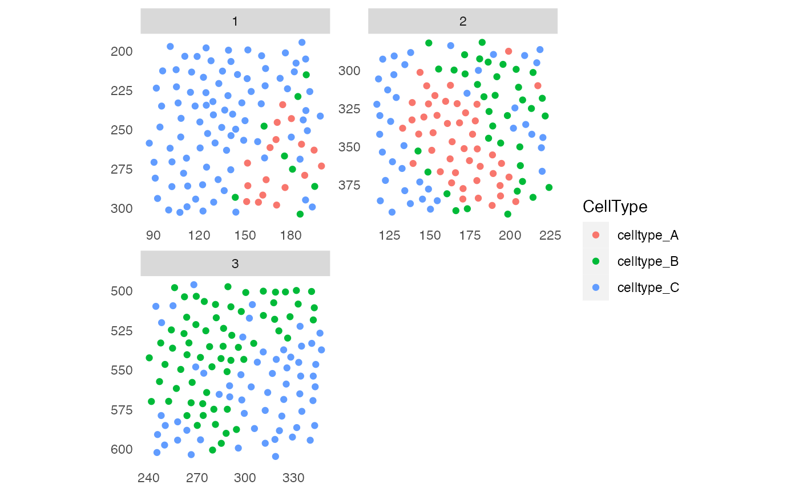
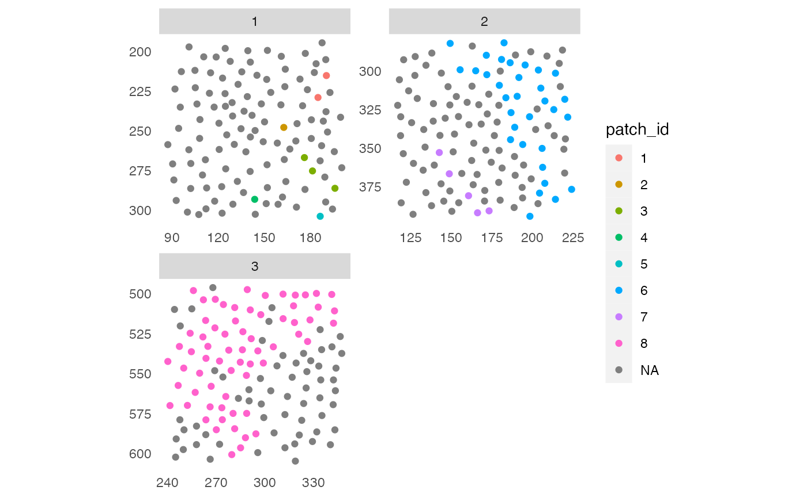

Function to detect patches containing defined cell types
Source:R/patchDetection.R
patchDetection.RdFunction to detect spatial clusters of defined types of cells. By defining a certain distance threshold, all cells within the vicinity of these clusters are detected as well.
patchDetection( object, patch_cells, colPairName, min_patch_size = 1, name = "patch_id", expand_by = 0, coords = c("Pos_X", "Pos_Y"), convex = FALSE, img_id = NULL, BPPARAM = SerialParam() )
Arguments
| object | a |
|---|---|
| patch_cells | logical vector of length equal to the number of cells
contained in |
| colPairName | single character indicating the |
| min_patch_size | single integer indicating the minimum number of connected cells that make up a patch before expansion. |
| name | single character specifying the |
| expand_by | single numeric indicating in which vicinity range cells should be considered as belonging to the patch (see Details). |
| coords | character vector of length 2 specifying the names of the
|
| convex | should the convex hull be computed before expansion? Default: the concave hull is computed. |
| img_id | single character indicating the |
| BPPARAM | a |
Value
An object of class(object) containing a patch ID for each
cell in colData(object)[[name]].
Detecting patches of defined cell types
This function works as follows:
1. Only cells defined by patch_cells are considered for patch
detection.
2. Patches of connected cells are detected. Here, cell-to-cell connections
are defined by the interaction graph stored in
colPair(object, colPairName).
3. If expand_by > 0, a concave (default) or convex hull is constructed
around each patch. This is is then expanded by expand_by and cells
within the expanded hull are detected and assigned to the patch.
The returned object contains an additional entry
colData(object)[[name]], which stores the patch ID per cell. NA
indicate cells that are not part of a patch.
References
Author
Tobias Hoch
adapted by Nils Eling (nils.eling@dqbm.uzh.ch)
Examples
library(cytomapper) data(pancreasSCE) # Visualize cell types plotSpatial(pancreasSCE, img_id = "ImageNb", node_color_by = "CellType")# Build interaction graph pancreasSCE <- buildSpatialGraph(pancreasSCE, img_id = "ImageNb", type = "expansion", threshold = 20) # Detect patches of "celltype_B" cells pancreasSCE <- patchDetection(pancreasSCE, patch_cells = pancreasSCE$CellType == "celltype_B", colPairName = "expansion_interaction_graph") plotSpatial(pancreasSCE, img_id = "ImageNb", node_color_by = "patch_id")# Include cells in vicinity pancreasSCE <- patchDetection(pancreasSCE, patch_cells = pancreasSCE$CellType == "celltype_B", colPairName = "expansion_interaction_graph", expand_by = 20, img_id = "ImageNb") plotSpatial(pancreasSCE, img_id = "ImageNb", node_color_by = "patch_id")